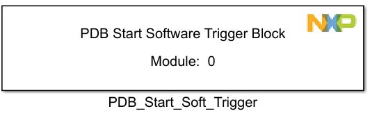
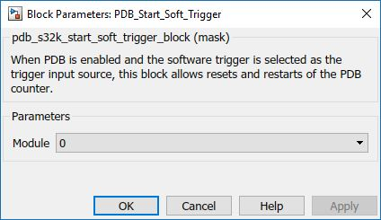

PDB Start Soft Trigger Block
When PDB is enabled and the software trigger is selected as the trigger input source, this block allows resets and restarts of the PDB counter.
Block Image
Inputs:
- None
Outputs:
- None
Parameters and Dialog Box
PDB Module
Selects which PDB module to use.
Block Dependency
- Use PDB_Config Block to configure PDB
Block Miscellaneous Details:
- None